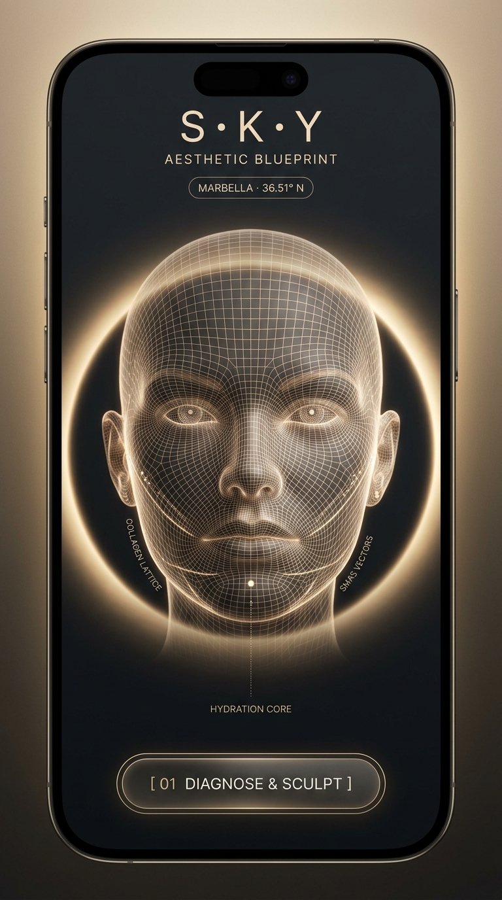
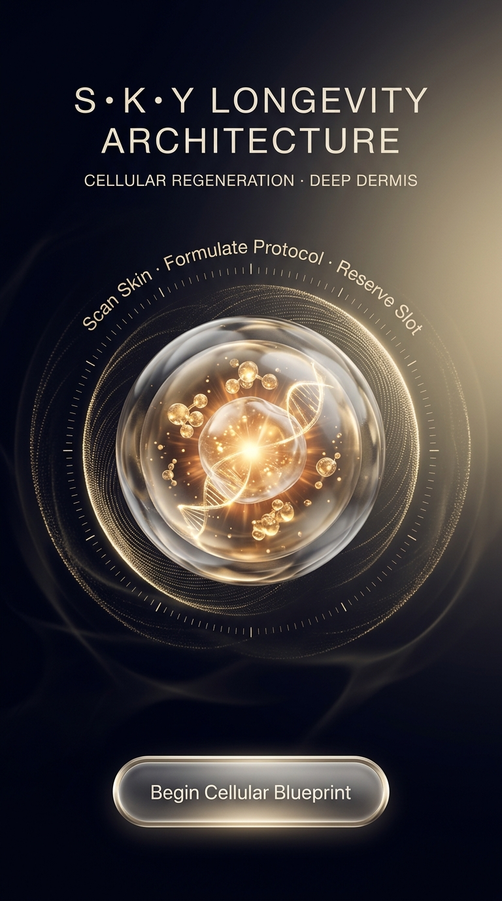

✦ Прототип 01 · 3D Laser Hologram
КІНЕТИЧНА АРХІТЕКТУРА

SMAS VECTORS // 4.5mm
COLLAGEN LATTICE // 2.5MHz
HYDRATION CORE // 96%
Hardware Sensor
Zemits Verstand HD
Dynamic Scan
ACTIVE 60FPS
✦ Прототип 02 · Fluid Optics & Caustics
СЕНСОРНИЙ РЕСЕТ

Глибоке занурення в атмосферу Марбельї: оптичне рідке скло, живі каустичні хвилі басейну та невагома левітація клітинних пептидів.
Хвиля Океану
Рідке Золото
Кріо-Глянець